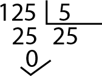

La división es una de las cuatro operaciones básicas de la aritmética que consiste en averiguar cuántas veces un número (divisor) está contenido en otro número (dividendo).

Símbolo o signo de la división
La representación o signo de la división que se le conoce como “entre”, es mediante una diagonal (/) o un óbelo (÷), en algunos casos se representa con dos puntos (:).
Partes de la división
Al realizar una operación de división se pueden considerar 4 elementos importantes:
Divisor: Es la cifra o cantidad por la cual dividiremos, según la cantidad que nos indica el dividendo.
Dividendo: Es la cantidad que queremos repartir y por la cual vamos a realizar la división.
Cociente: Es el resultado de la división.
Residuo: El residuo o también conocido como resto, es el número o cifra sobrante de la división.
¿Cómo hacer una división?
Te presentamos este video explicativo donde se muestra como realizar una división.
O tambien puedes visitar esta página web, donde se explica como hacer una división. Dando click Aqui
Propiedades de la división
Existen diferentes propiedades básicas que se cumplen en una división:
División entre 1: Cualquier número dividido entre 1 va a resultar el mismo número, ejemplo: 4/1 = 4, 12/1 = 12.
Dividir el 0: Cualquier número que divida el 0 va a resultar cero, ejemplo: 0/5 = 0, 0/12 = 0.
División entre 0: Cualquier número dividido entre cero se considera un número infinito (inf).
![[Partes de la division]](../../imagenes/divisiones.png)